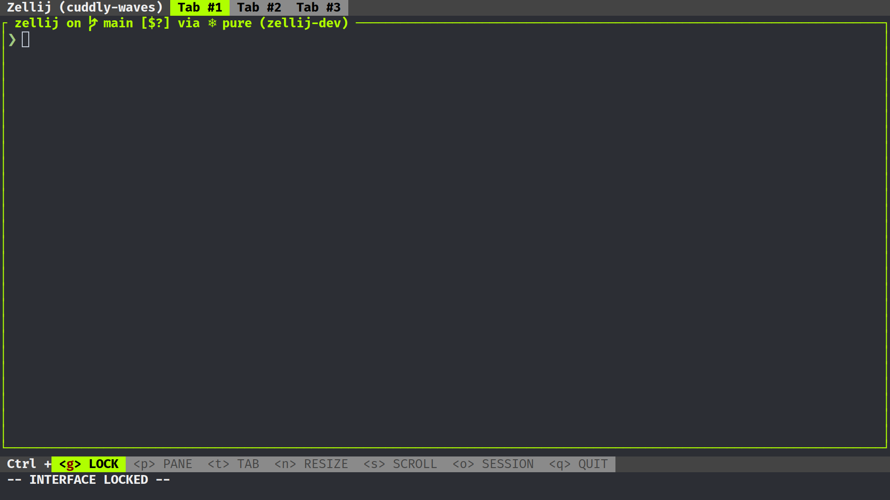
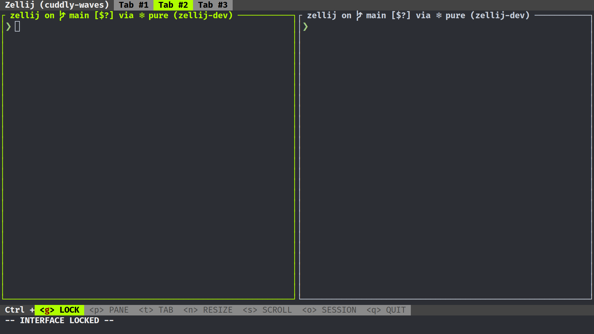
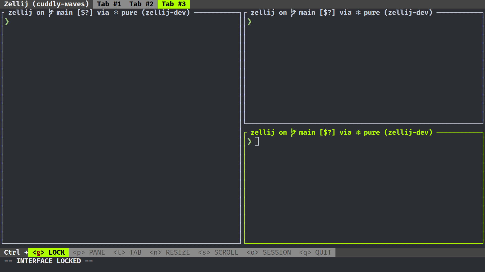

Introduction
This is the documentation for the Zellij terminal workspace.
- For installing Zellij, see: Installation
- For configuring Zellij, see: Configuration
- For Operating System Compatibility and Known Issues, see: Compatibility
- For setting up layouts: Layouts
- For developing plugins: Plugins
Installation
Currently Binaries are produced for both Linux and MacOS.
However it is available in some public repositories.
Rust - Cargo
For instructions on how to install Cargo see here:
Once installed run:
cargo install zellij
If experiencing errors, if installed through rustup, please try running:
rustup update
Binary Download
Binaries are made available each release for the Linux and MacOS operating systems.
It is possible to download the binaries for these on the release page.
Once downloaded, untar the file:
tar -xvf zellij*.tar.gz
check for the execution bit:
chmod +x zellij
and then execute Zellij:
./zellij
Include the directory Zellij is in, in your PATH Variable if you wish to be able to execute it anywhere.
'Or'
move Zellij to a directory already included in your [$PATH] Variable.
Compiling Zellij From Source
Instructions on how to compile Zellij from source can be found here.
Third party repositories
Zellij is packaged in some third part repositories. Please keep in mind that they are not directly affiliated with zellij maintainers:

More information about third party installation can be found here.
Overview
Zellij is a workspace aimed at developers, ops-oriented people and anyone who loves the terminal. At its core, it is a terminal multiplexer (similar to tmux and screen), but this is merely its infrastructure layer.
Zellij has a native layout and plugin system. To understand Zellij a little bit better, let us take a look at the default configuration.
Default Configuration

The default configuration consists of:
- The tab-bar plugin. It shows current tabs that are in use as well as the session name.
- The pane, in which the default shell is started. The title the shell sets can be seen in the upper left corner of the pane.
- The status-bar plugin. It gives an overview over current default keybindings, since Zellij is modal it can show hints based on modes it currently resides in.
To dive deeper in to how the layout-template that is behind the default layout works, consider checking out the relevant section.
Let's open a new tab and then a couple panes inside that new tab:
- Ctrl + t
- n
- Ctrl + p
- n
- r
- Return
The status-bar should have guided us through:

 And this is our current state:
And this is our current state:
 Zellij doesn't need a terminal to keep commands running, because it uses a client
and server system. Let us disconnect and reconnect to the same session now:
Zellij doesn't need a terminal to keep commands running, because it uses a client
and server system. Let us disconnect and reconnect to the same session now:
- Ctrl + o
- d

If only one server session is running in the background zellij can restore the connection automatically, if not then we need a specific session name. We can get the name in the following way:
zellij list-sessions
And now we reattach to the currently running session:
zellij attach hilarious-kitty
Commands
These commands can be invoked with zellij [SUBCOMMAND].
For more details, each subcommand has its own help section when run with the
--help flag (zellij [SUBCOMMAND] --help).
attach [session-name]
short: a
Zellij will attempt to attach to an already running session, with the name
[session-name].
If given no [session-name] and there is only one running session, it will attach to that session.
The attach subcommand will also accept the optional options subcommand.
list-sessions
short: ls
Will list all the names of currently running sessions.
kill-sessions [target-session]
short: k
Will kill the session with the name of [target-session], if it is currently
running.
kill-all-sessions
short: ka
Will prompt the user to kill all running sessions.
options
Can be used to change the behaviour of zellij on startup. Will supercede options defined in the config file. To see a list of options look here.
setup
Functionality to help with the setup of zellij.
| Flag | Description |
|---|---|
| --check | Checks the configuration |
| --clean | Start with default configuration |
| --dump-config | Dump the default configuration file to stdout |
| --dump-layout [LAYOUT] | Dump a specified default layout file to stdout |
| --generate-completions [SHELL] | Generate completions for the specified shell |
Flags
These flags can be invoked with zellij --flag.
| Flag | Description |
|---|---|
| --help | Display the help prompt |
| --debug | Gather additional debug information |
| --version | Print version information |
Configuration
By default Zellij will look for config.yaml in the config directory.
Quickstart:
mkdir ~/.config/zellij
zellij setup --dump-config > ~/.config/zellij/config.yaml
The default config directory order is as follows:
-
--config-dirflag -
ZELLIJ_CONFIG_DIRenv variable -
$HOME/.config/zellij -
default location
- Linux:
/home/alice/.config/zellij - Mac:
/Users/Alice/Library/Application Support/org.Zellij-Contributors.Zellij
- Linux:
-
system location (
/etc/zellij)
In order to pass a config file directly to zellij:
zellij --config [FILE]
or use the ZELLIJ_CONFIG_FILE environment variable.
To start without loading configuration from default directories:
zellij options --clean
To show the current default configuration:
zellij setup --dump-config
Options
You can make use of these options either by invoking zellij with
zellij options [OPTION] or binding them in the configuration file.
Eg. zellij options --simplified-ui true is equivalent to simplified_ui: true in the config file.
| Option | Config | Default | Description |
|---|---|---|---|
| default-mode | default_mode | normal | The first mode on startup. |
| default-shell | default_shell | $SHELL | The default shell. |
| mouse-mode | mouse_mode | true | Enable mouse mode. |
| disable-mouse-mode | - | false | Disable mouse mode. |
| simplified-ui | simplified_ui | false | Request the Plugins to use a more compatible ui. |
| pane-frames | pane_frames | true | Display frames around the panes. |
| no-pane-frames | - | false | Disable display of frames around the panes. |
| on-force-close | on_force_close | detach | What to do when receiving a SIGTERM, SIGINT, SIGQUIT or SIGHUP. |
| theme | theme | default | Switch to a theme configured under the themes section. |
Configuring Keybindings
Zellij comes with a default set of keybindings that try to fit as many different users and use cases while trying to maximize comfort for everyone.
It is possible to add to these defaults or even override them with an external configuration. For more information about the file, see Configuration.
The structure of the keybinds section of the file is as follows:
keybinds:
normal:
- action: []
key: []
Under the main keybinds section one can list the new bindings they'd like to add grouped under the different Modes (normal in this example).
The action is a sequence of one or more instructions sent to Zellij through this keybinding. The key is a list of one or more keys, any one of them alone would trigger the sequence of actions.
For example:
keybinds:
normal:
- action: [ NewTab, GoToTab: 1,]
key: [ Char: 'c',]
Will create a new tab and then switch to tab number 1 on pressing the
c key.
Whereas:
keybinds:
normal:
- action: [ NewTab,]
key: [ Char: 'c', Char: 'd',]
Will create a new tab on pressing either the c or the d key.
To unbind the default Keybindings
The default keybinds can be unbound either for a specific mode, or for every mode. It supports either a list of keybinds, or a bool indicating that every keybind should be unbound:
keybinds:
unbind: true
Will unbind every default binding.
keybinds:
unbind: [ Ctrl: 'p']
Will unbind every default ^P binding for each mode.
keybinds:
normal:
- unbind: true
Will unbind every default keybind for the normal mode.
keybinds:
normal:
- unbind: [ Alt: 'n', Ctrl: 'g']
Will unbind every default keybind for n and ^g for the normal mode.
Example
This configuration can be used to configure Zellij's default keybindings: default.yaml
Modes
The Zellij keybindings are grouped into different modes, which are a logical separation meant to reduce the mental overhead and allow to duplicate shortcuts in different situations.
normal
This is the default mode Zellij starts with. By default it provides the ability to switch to different modes, as well as some quick navigation shortcuts.
locked
This mode "locks" the interface, disabling all keybindings except one that would switch to "normal" mode (ctrl-g by default).
It is intended to give users a workaround in case one of the default keybindings overrides something they use in their terminal. (eg. ctrl-r for reverse history search in bash).
pane
This mode includes instructions that manipulate the different panes. Eg. adding new panes, closing panes and moving the focused pane.
tab
This mode includes instructions that manipulate the different tabs. Eg. adding new tabs, closing tabs and moving the active tab.
resize
This mode allows the resizing of the focused pane.
scroll
This mode allows scrolling up/down within the focused pane.
session
This mode allows detaching from a session.
Keys
These are the possible keys and key combinations one can set in the Keybindings configuration. For more information, please see: https://docs.rs/termion/1.5.6/termion/event/enum.Key.html
Char: <character>
A single character with no modifier, eg. Char: f
Alt: <character>
A single character preceded by the Alt modifier, eg. Alt: f.
Ctrl: <character>
A single character preceded by the Ctrl modifier, eg. Ctrl: f.
F: <1-12>
One of the F characters (usually at the top of the keyboard). eg. F: 11
Backspace
The Backspace key.
Left / Right / Up / Down
The arrow keys on the keyboard.
Home
The home key.
End
The End key.
PageUp / PageDown
The PageUp or PageDown keys.
BackTab
The backward Tab key.
Delete
The delete key.
Insert
The insert key.
Esc
The Esc key.
Actions
These are the actions that can be assigned to key sequences when configuring keybindings.
Quit
Quit Zellij.
Detach
Detach from the currently running Zellij session.
MovePane: <Direction>
Move the currently focused pane in a direction.
SwitchToMode: <InputMode>
Switch to the specified input mode.
The mode should be capitalized, eg. SwitchToMode: Normal.
Note that there's a "hidden" mode called RenameTab which can be used in order to trigger the renaming of a tab.
Resize: <Direction>
Resize focused pane in the specified direction.
Direction should be one of Left, Right, Up, Down, Increase, or Decrease.
Example: Resize: Down
FocusNextPane
Switch focus to next pane to the right or below if on screen edge.
FocusPreviousPane
Switch focus to next pane to the left or above if on screen edge.
SwitchFocus
Switch focus to pane with the next ID (this is mostly left around for legacy support, FocusNextPane or FocusPreviousPane should be preferred).
MoveFocus: <Direction>
Move focus to the pane with the greatest overlap with the current pane in the specified direction.
Direction should be one of Left, Right, Up or Down.
eg. MoveFocus: Left
ScrollUp
Scroll up 1 line inside the focused pane.
ScrollDown
Scroll down 1 line inside the focused pane.
PageScrollUp
Scroll up one page in the focused pane.
PageScrollDown
Scroll down one page in the focused pane.
ToggleFocusFullscreen
Toggle between fullscreen focus pane and normal layout.
TogglePaneFrames
Toggle between pane frames and normal layout.
ToggleActiveSyncTab
Toggle between sending text commands to all panes on the current tab and just the focused pane.
ToggleTab
Switch between the most recently used tabs.
NewPane: <Direction>
Open a new pane in the specified direction (relative to focus).
If no direction is specified, will try to use the biggest available space.
Direction should be one of Left, Right, Up or Down.
Specifying no direction should be done by introducing a space character (this is a bug and should be fixed).
eg. NewPane: Left or NewPane:
CloseFocus
Close the focused pane.
NewTab: <TabLayout>
Create a new tab. Optionally with the provided tab-layout.
Example:
NewTab:
or
NewTab: {
direction: Vertical,
parts: [
direction: Vertical,
direction: Horizontal,
],}
GoToNextTab
Go to the next tab.
GoToPreviousTab
Go to the previous tab.
CloseTab
Close the current tab.
GoToTab: <index>
Go to the tab of the specified index.
Run: {cmd: <path>}
Run the specified command in a new pane. A comma separated list of arguments, or the split direction is optional:
Run: {cmd: <path>, args: [ARGS], direction: <direction>}
Write: [bytes]
Write the specified bytes in the focused pane.
WriteChars: <characters>
Write the specified characters in the focused pane.
Examples
Zellij's keybindings can be configured to behave in multiple ways. Here are example configurations to possibly inspire you.
Prefix Example
This certain example works as if it had a prefix key.
Zellij starts in locked mode and only the prefix key switches to normal mode, from then on it is possible to have a layer of shortcuts, or more special modes to switch to.
Eg:
- Open a pane: ^b - n
- Open a pane to the right: ^b - p - r
- Open a tab: ^b - N
- Open multiple tabs: ^b - t - N - n
- Switch to a specific pane or tab: ^b - h/j/k/l
- Switch to a specific tab: ^b - 1
- Resize: ^b - r - h/j/k/l
- Fullscreen: ^b - p - f
- Send the prefix key (^b): ^b - b
- Detach the session: ^b - o - d
- Quit zellij: ^b - ^q
Here is one possible example of that:
default_mode: locked
keybinds:
unbind: true
# the prefix key ^b
locked:
- action: [SwitchToMode: Normal,]
key: [Ctrl: 'b',]
normal:
# send the prefix-key ^b on pressing b in normal mode
# then switch back to locked mode
- action: [Write: [2,], SwitchToMode: Locked]
key: [Char: 'b']
- action: [SwitchToMode: Locked,]
key: [Ctrl: 'b', Char: ' ', Char: "\n"]
- action: [SwitchToMode: Pane,]
key: [Char: 'p',]
- action: [SwitchToMode: Resize,]
key: [Char: 'r',]
- action: [SwitchToMode: Tab,]
key: [Char: 't',]
- action: [SwitchToMode: Scroll,]
key: [Char: 's',]
- action: [Quit,]
key: [Ctrl: 'q',]
- action: [NewPane: , SwitchToMode: Locked, ]
key: [ Alt: 'n',]
- action: [NewTab: , SwitchToMode: Locked, ]
key: [ Char: 'N',]
- action: [NewPane: , SwitchToMode: Locked,]
key: [ Char: 'n',]
- action: [MoveFocusOrTab: Left,]
key: [ Char: 'h', Alt: 'h' ]
- action: [MoveFocusOrTab: Right,]
key: [ Char: 'l', Alt: 'l',]
- action: [MoveFocus: Down,]
key: [ Char: 'j', Alt: 'j',]
- action: [MoveFocus: Up,]
key: [ Char: 'k', Alt: 'k',]
- action: [FocusPreviousPane,]
key: [ Char: '[', Alt: '[']
- action: [FocusNextPane,]
key: [ Char: ']', Alt: '[']
- action: [NewPane: Down, SwitchToMode: Locked,]
key: [Char: '-',]
- action: [NewPane: Right, SwitchToMode: Locked,]
key: [Char: '\',]
- action: [GoToTab: 1,]
key: [ Char: '1',]
- action: [GoToTab: 2,]
key: [ Char: '2',]
- action: [GoToTab: 3,]
key: [ Char: '3',]
- action: [GoToTab: 4,]
key: [ Char: '4',]
- action: [GoToTab: 5,]
key: [ Char: '5',]
- action: [GoToTab: 6,]
key: [ Char: '6',]
- action: [GoToTab: 7,]
key: [ Char: '7',]
- action: [GoToTab: 8,]
key: [ Char: '8',]
- action: [GoToTab: 9,]
key: [ Char: '9',]
resize:
- action: [SwitchToMode: Locked,]
key: [Ctrl: 'b']
- action: [SwitchToMode: Pane,]
key: [Ctrl: 'p',]
- action: [SwitchToMode: Tab,]
key: [Ctrl: 't',]
- action: [SwitchToMode: Locked,]
key: [Ctrl: 'r', Char: "\n", Char: ' ',]
- action: [SwitchToMode: Scroll,]
key: [Ctrl: 's']
- action: [Quit]
key: [Ctrl: 'q']
- action: [Resize: Left,]
key: [Char: 'h', Left, ]
- action: [Resize: Down,]
key: [Char: 'j', Down, ]
- action: [Resize: Up,]
key: [Char: 'k', Up, ]
- action: [Resize: Right,]
key: [Char: 'l', Right, ]
- action: [NewPane: ,]
key: [ Alt: 'n',]
- action: [MoveFocus: Left,]
key: [ Alt: 'h', Left,]
- action: [MoveFocus: Right,]
key: [ Alt: 'l', Right,]
- action: [MoveFocus: Down,]
key: [ Alt: 'j', Down,]
- action: [MoveFocus: Up,]
key: [ Alt: 'k', Up,]
- action: [FocusPreviousPane,]
key: [ Alt: '[',]
- action: [FocusNextPane,]
key: [ Alt: ']',]
pane:
- action: [SwitchToMode: Locked,]
key: [Ctrl: 'b']
- action: [SwitchToMode: Normal,]
key: [Ctrl: 'p',]
- action: [SwitchToMode: Tab,]
key: [Ctrl: 't',]
- action: [SwitchToMode: Locked,]
key: [Ctrl: 'r', Char: "\n", Char: ' ',]
- action: [SwitchToMode: Scroll,]
key: [Ctrl: 's']
- action: [Quit,]
key: [Ctrl: 'q',]
- action: [MoveFocus: Left,]
key: [ Alt: 'h', Left,]
- action: [MoveFocus: Right,]
key: [ Alt: 'l', Right,]
- action: [MoveFocus: Down,]
key: [ Alt: 'j', Down,]
- action: [MoveFocus: Up,]
key: [ Alt: 'k', Up,]
- action: [SwitchFocus,]
key: [Char: 'p']
- action: [NewPane: , SwitchToMode: Locked,]
key: [Char: 'n', Alt: 'n',]
- action: [NewPane: ,]
key: [Char: 'N', ]
- action: [NewPane: Down, SwitchToMode: Locked,]
key: [Char: 'd',]
- action: [NewPane: Right, SwitchToMode: Locked,]
key: [Char: 'r',]
- action: [TogglePaneFrames, SwitchToMode: Locked,]
key: [Char: 'z',]
- action: [TogglePaneFrames,]
key: [Char: 'Z',]
- action: [NewPane: Down,]
key: [Char: 'D',]
- action: [NewPane: Right,]
key: [Char: 'R',]
- action: [CloseFocus, SwitchToMode: Locked,]
key: [Char: 'x',]
- action: [CloseFocus,]
key: [Char: 'X',]
- action: [ToggleFocusFullscreen, SwitchToMode: Locked,]
key: [Char: 'f',]
- action: [ToggleFocusFullscreen,]
key: [Char: 'F',]
- action: [FocusPreviousPane,]
key: [ Alt: '[',]
- action: [FocusNextPane,]
key: [ Alt: ']',]
tab:
- action: [SwitchToMode: Normal,]
key: [Ctrl: 't']
- action: [SwitchToMode: Pane,]
key: [Ctrl: 'p',]
- action: [SwitchToMode: Locked,]
key: [Ctrl: 'b', Char: "\n", Char: ' ',]
- action: [SwitchToMode: Scroll,]
key: [Ctrl: 's']
- action: [SwitchToMode: RenameTab, TabNameInput: [0],]
key: [Char: 'r']
- action: [Quit,]
key: [Ctrl: 'q',]
- action: [FocusPreviousPane,]
key: [ Alt: '[',]
- action: [FocusNextPane,]
key: [ Alt: ']',]
- action: [GoToPreviousTab,]
key: [ Char: 'h',]
- action: [GoToNextTab,]
key: [ Char: 'l',]
- action: [GoToNextTab,]
key: [ Char: 'j',]
- action: [GoToPreviousTab,]
key: [ Char: 'k',]
- action: [NewTab: ,]
key: [ Char: 'n',]
- action: [CloseTab,]
key: [ Char: 'x',]
- action: [MoveFocus: Left,]
key: [ Alt: 'h',]
- action: [MoveFocus: Right,]
key: [ Alt: 'l',]
- action: [MoveFocus: Down,]
key: [ Alt: 'j',]
- action: [MoveFocus: Up,]
key: [ Alt: 'k',]
- action: [GoToTab: 1,]
key: [ Char: '1',]
- action: [GoToTab: 2,]
key: [ Char: '2',]
- action: [GoToTab: 3,]
key: [ Char: '3',]
- action: [GoToTab: 4,]
key: [ Char: '4',]
- action: [GoToTab: 5,]
key: [ Char: '5',]
- action: [GoToTab: 6,]
key: [ Char: '6',]
- action: [GoToTab: 7,]
key: [ Char: '7',]
- action: [GoToTab: 8,]
key: [ Char: '8',]
- action: [GoToTab: 9,]
key: [ Char: '9',]
scroll:
- action: [SwitchToMode: Locked,]
key: [Ctrl: 'r', Ctrl: 's', Char: ' ',
Char: "\n",]
- action: [SwitchToMode: Tab,]
key: [Ctrl: 't',]
- action: [SwitchToMode: Normal,]
key: [Ctrl: 's',]
- action: [SwitchToMode: Pane,]
key: [Ctrl: 'p',]
- action: [Quit,]
key: [Ctrl: 'q',]
- action: [ScrollDown,]
key: [Char: 'j', Down,]
- action: [ScrollUp,]
key: [Char: 'k', Up,]
- action: [PageScrollDown,]
key: [Ctrl: 'f', PageDown,]
- action: [PageScrollUp,]
key: [Ctrl: 'b', PageUp,]
- action: [NewPane: ,]
key: [ Alt: 'n',]
- action: [MoveFocus: Left,]
key: [ Alt: 'h',]
- action: [MoveFocus: Right,]
key: [ Alt: 'l',]
- action: [MoveFocus: Down,]
key: [ Alt: 'j',]
- action: [MoveFocus: Up,]
key: [ Alt: 'k',]
- action: [FocusPreviousPane,]
key: [ Alt: '[',]
- action: [FocusNextPane,]
key: [ Alt: ']',]
renametab:
- action: [SwitchToMode: Normal,]
key: [Ctrl: 'r']
- action: [SwitchToMode: Locked,]
key: [Ctrl: 'b', Ctrl: 's', Char: ' ',]
- action: [SwitchToMode: Tab,]
key: [Char: "\n",]
- action: [TabNameInput: [27] , SwitchToMode: Tab,]
key: [Esc,]
- action: [NewPane: ,]
key: [ Alt: 'n',]
- action: [MoveFocus: Left,]
key: [ Alt: 'h',]
- action: [MoveFocus: Right,]
key: [ Alt: 'l',]
- action: [MoveFocus: Down,]
key: [ Alt: 'j',]
- action: [MoveFocus: Up,]
key: [ Alt: 'k',]
- action: [FocusPreviousPane,]
key: [ Alt: '[',]
- action: [FocusNextPane,]
key: [ Alt: ']',]
session:
- action: [SwitchToMode: Normal,]
key: [Ctrl: 'o']
- action: [SwitchToMode: Resize,]
key: [Ctrl: 'r',]
- action: [SwitchToMode: Pane,]
key: [Ctrl: 'p',]
- action: [SwitchToMode: Tab,]
key: [Ctrl: 't',]
- action: [SwitchToMode: Locked,]
key: [Ctrl: 'b', Char: "\n", Char: ' ',]
- action: [SwitchToMode: Scroll,]
key: [Ctrl: 's']
- action: [Quit,]
key: [Ctrl: 'q',]
- action: [Detach,]
key: [Char: 'd',]
Themes
You can specify a color theme, that will be picked up by zellij in the following way:
themes:
default:
fg: [0,0,0]
bg: [0,0,0]
black: [0,0,0]
red: [0,0,0]
green: [0,0,0]
yellow: [0,0,0]
blue: [0,0,0]
magenta: [0,0,0]
cyan: [0,0,0]
white: [0,0,0]
orange: [0,0,0]
for truecolor, or:
themes:
default:
fg: 0
bg: 0
black: 0
red: 0
green: 0
yellow: 0
blue: 0
magenta: 0
cyan: 0
white: 0
orange: 0
for 256 color.
If the theme is called default, then zellij will pick it on startup.
To specify a different theme, run zellij with:
zellij options --theme [NAME]
or put the name in the configuration file with theme: [NAME].
Layouts
Layouts are yaml configuration files which Zellij can load on startup. These files can describe a layout of terminal panes and plugins that Zellij will create when it loads. To load a layout with Zellij:
zellij --layout-path /path/to/your/layout_file.yaml
By default Zellij will load the default.yaml layout, that is found in the
layout directory (by default a subdirectory of the config
directory [config/layouts]). Falling back to an internal default layout,
if not found.
Layouts residing in the default directory can be accessed as follows:
zellij --layout [layout_name]
Example
This file:
---
tabs:
- direction: Vertical
parts:
- direction: Horizontal
parts:
- direction: Vertical
- direction: Vertical
- direction: Horizontal
Will instruct Zellij to create this layout:
┌─────┬─────┐
│ │ │
├─────┤ │
│ │ │
└─────┴─────┘
Creating a layout file
A layout file is a nested tree structure.
Each node describes either a pane, or a space in which its parts (children) will be created.
The layout file is divided in to two sections: templates and tabs.
The templates describe the structure of the layout and what part of the ui
should be tab agnostic.
The tabs describe which part of the layout should be tab specific.
For this mechanism the templates make use of an extra attribute called body,
if it is specified each single tab will be inserted in to the template and then
started by zellij.
parts: <layout>
Layouts are composed through the optional parts section, if a layout has a non empty parts section
it is a node that is split up into these respective parts.
Example:
parts:
- direction: Vertical
- direction: Vertical
Each node has the following fields:
direction: Horizontal / Vertical
If the node has children, they will be created as splits in this direction.
split_size: Percent: <1-100> / Fixed: <lines/columns>
This indicates either a percentage of the node's parent's space or a fixed size of columns/rows from its parent's space. By default the splits are proportional.
Example:
parts:
- direction: Vertical
split_size:
Percent: 50
- direction: Vertical
split_size:
Percent: 50
run: plugin: <plugin> / command: <command>
This is an optional instruction to either run a command, or a plugin. If indicated, instead of loading the default shell in a terminal pane, the run action will be executed.
plugin: </path/to/plugin.wasm>
This is an optional path to a compiled Zellij plugin.
If indicated, instead of loading a terminal, this plugin will be loaded.
For more information, please see the plugin documentation of this guide.
In case the plugin resides in the plugin directory, specifying the name of the plugin is sufficient.
Example:
run:
plugin:
location: "zellij:status-bar"
_allow_exec_host_cmd: false # Optional and false by default
For more information, please see the plugin documentation of this guide.
The _allow_exec_host_cmd is preliminary and allows plugins to run commands
on the host system, if the plugins need that functionality the user can opt in
to it.
command: {cmd: <path/to/command> , args: <optional-arguments> }
This is an optional path to a command. If indicated, instead of loading a pane with the default shell, this command will be executed. Optionally it's arguments can be passed as a vector of strings.
Example:
run:
command: {cmd: htop, args: ["-C"]}
name: <name-of-the-tab>
This is an optional command that can be used to name the tab in the tab layout
section.
Example:
tabs:
- name: "<name-of-the-tab>"
This is currently limited to the tabs section.
session: <session-configuration>
This is an optional configuration option that can be used to modify the session behavior of the layout.
Current options include:
session:
name: "zellij" # a string, that names the session
attach: true # default `true`. If session exists, re-attach.
Example:
session:
name: "zellij"
Adding this to the layout would name the session zellij and upon loading
the layout again will try to attach to an existing session that is called
zellij.
If the attach configuration is false, then zellij will show an error
message on trying to create the layout, if the layout name already exists.
configuration
The layout supports all the configuration options from the Configuration page.
If an option is specified in a layout, it has precedence over the config file itself.
Further examples
Please take a look at the default layouts that come with Zellij, or the layouts that reside in the example directory for more complete layouts.
Layout Templates
The templates section of the layout file describes the structure of the layout. To understand how it works let us look at the default layout a little bit closer.
zellij setup --dump-layout default:
---
template:
direction: Horizontal
parts:
- direction: Vertical # part 1
borderless: true
split_size:
Fixed: 1
run:
plugin:
location: "zellij:tab-bar"
- direction: Vertical # part 2
body: true
- direction: Vertical # part 3
borderless: true
split_size:
Fixed: 2
run:
plugin:
location: "zellij:status-bar"
The default layout consists of three parts. The plugin tab-bar (part 1), a body (part 2) and the status-bar plugin (part 3).
Since the tabs section is empty, a default pane will be inserted in to the
body section

Let us now use the default layout and build upon it:
---
template:
direction: Horizontal
parts:
- direction: Vertical # part 1
borderless: true
split_size:
Fixed: 1
run:
plugin:
location: "zellij:tab-bar"
- direction: Vertical # part 2
body: true
- direction: Vertical # part 3
borderless: true
split_size:
Fixed: 2
run:
plugin:
location: "zellij:status-bar"
tabs:
- name: "tab 1" # tab 1
- name: "tab 2" # tab 2
direction: Vertical
parts:
- direction: Horizontal
- direction: Horizontal
- name: "tab 3" # tab 3
direction: Vertical
parts:
- direction: Horizontal
- direction: Horizontal
parts:
- direction: Horizontal
- direction: Vertical
This layout will create the following tabs upon loading.
Tab 1:  Tab 2:  Tab 3: 
This is how the tabs would look like with pane frames disabled.
Tab 1:
 Tab 2:
Tab 2:
 Tab 3:
Tab 3:

Plugins
One feature that makes Zellij unique is its WebAssembly plugin system. This allows plugin developers to write their plugin in any language that can run on WASI! Rust offers first-class support for WASI, but other languages like C/C++, AssemblyScript, even Python should be supported.
Disclaimer: The API for plugins is very much a work in progress. Don't be shy to request new features on our tracking issue!
Plugin Overview
This is a small list of default plugins that zellij ships with:
This is an overview of zellij plugins, please do keep in mind that they are not necessarily connected to zellij maintainers:
Developing a Plugin
Currently we have a complete guide for developing plugins in Rust and plan to add more guides for other languages in the future. If you are feeling particularly brave, you can try to write plugins in another language today! The Other Languages section will get you started.
Writing a Plugin in Rust
Writing a Zellij plugin in Rust is incredibly easy thanks to Rust's first-class support for WebAssembly and the simple zellij-tile scaffolding library. This guide will walk through implementing the rust-plugin-example, a simple event logger that records mode-changes within Zellij.
Getting Started
Installing Rust & Zellij
First things first, to develop a plugin in Rust, you'll need Rust installed! The easiest way to do this is by using rustup.
Once you have Rust and Cargo installed, getting the latest version of Zellij is as easy as running:
cargo install zellij
You'll also want to add the installed binary to your path!
Cloning The Template Repository
To streamline the development experience, we provide a template repository that contains everything you need to get started quickly!
You can use a tool called cargo-generate to fill in a couple of the gaps automatically:
# First install `cargo-generate`
cargo install cargo-generate
# Then clone the rust-plugin template
cargo generate --git https://github.com/zellij-org/rust-plugin-template.git --name mode-logger
cd mode-logger
The Basic Structure of a Rust Plugin
After cloning the template repository, you should have a directory that looks a little bit like this:
.
├── .cargo
│ └── config.toml
├── Cargo.toml
├── plugin.yaml
├── README.md
└── src
└── main.rs
.cargo/config.toml
[build]
target = "wasm32-wasi"
This file specifies a default target for our project. In this case, the correct WASI target is wasm32-wasi.
Cargo.toml
[package]
name = "mode-logger"
version = "0.1.0"
authors = ["Brooks J Rady <b.j.rady@gmail.com>"]
edition = "2018"
[dependencies]
zellij-tile = "1.0.0"
This is a quite standard package file that cargo-generate has partially filled in for us. Note the dependency on zellij-tile which provides some helpful functionality for avoiding boilerplate and writing unsafe code.
plugin.yaml
---
direction: Horizontal
parts:
- direction: Vertical
split_size:
Fixed: 1
plugin: tab-bar
- direction: Vertical
plugin: target/wasm32-wasi/debug/mode-logger.wasm
- direction: Vertical
split_size:
Fixed: 2
plugin: status-bar
This is a Zellij Layout that loads a mostly default instance of Zellij, but with the middle terminal pane replaced by the plugin being developed. The plugin: target/wasm32-wasi/debug/mode-logger.wasm line should point Zellij to the development version of our plugin.
There will likely be a better way of loading plugins in the future, but custom Layouts are currently the only way to do so.
src/main.rs
use zellij_tile::prelude::*;
#[derive(Default)]
struct State;
register_plugin!(State);
impl ZellijPlugin for State {
fn load(&mut self) {}
fn update(&mut self, event: Event) {}
fn render(&mut self, rows: usize, cols: usize) {}
}
When using the zellij-tile library, plugins are written as Structs that implement the ZellijPlugin trait. The magic line here is register_plugin!(State), which wraps up the State struct in a way that neatly exposes its ZellijPlugin implementation for Zellij to find.
Note that load(), update(), and render() have default implementations, so you only need to define the callbacks used by your plugin.
Hello, Zellij!
Let's tweak our main.rs a little to say hello!
use zellij_tile::prelude::*;
#[derive(Default)]
struct State;
register_plugin!(State);
impl ZellijPlugin for State {
fn load(&mut self) {}
fn update(&mut self, event: Event) {}
fn render(&mut self, rows: usize, cols: usize) {
println!("Hello, Zellij!");
}
}
It really is as simple as that! Anything printed to stdout by the render() method will be automatically drawn to the screen in the pane where the plugin is active.
Let's build our plugin and test things out:
cargo build
zellij --layout-path plugin.yaml

Implementing the Event Logger
That was pretty easy, so let's try to do something a bit more interesting! Let's subscribe to some Events by adding the following code to load():
fn load(&mut self) {
subscribe(&[EventType::ModeUpdate]);
}
Code in load() is called once the first time your plugin is loaded. Aside from that, it's nothing special. Anything that you can do in the load() method should be possible from within the update() and render() methods as well.
The subscribe() function is part of zellij-tile::prelude and sends a message to Zellij asking to be notified when certain Events occur. In this case, we're subscribing to ModeUpdate events. The documentation for Event tells us that a ModeUpdate contains the ModeInfo struct, which stores the current mode as well as some additional information.
To actually handle these events, we'll need to add some code to our update() method:
fn update(&mut self, event: Event) {
if let Event::ModeUpdate(mode_info) = event {
dbg!(mode_info.mode);
}
}
Here we are checking for ModeUpdates and destructuring them to get the current mode. Currently, the dbg!() macro is being used to dump this information to stderr. If we want to actually see this debug info, we'll need to run our plugin slightly differently:
cargo build
# The 2> redirects stderr to dbg.log
zellij -l plugin.yaml 2> dbg.log
Do some faffing about in Zellij, changing modes a couple of times, then take a look at dbg.log:
[src/main.rs:15] mode_info.mode = Normal
[src/main.rs:15] mode_info.mode = Pane
[src/main.rs:15] mode_info.mode = Tab
[src/main.rs:15] mode_info.mode = Resize
[src/main.rs:15] mode_info.mode = Scroll
[src/main.rs:15] mode_info.mode = Locked
[src/main.rs:15] mode_info.mode = Normal
Excellent! It looks like our plugin is receiving mode updates! If you'd like to see these sorts of logs live, try opening a second terminal and running tail -f dbg.log.
The next thing to do is properly store a log of events and print them to the screen. Let's start by tweaking our State struct:
use std::collections::VecDeque;
#[derive(Default)]
struct State {
log: VecDeque<String>,
}
We've gone with a VecDeque so that we can efficiently push Strings to the front of log and so we can show off how easy it is to use standard library components from within a plugin.
Let's change the update() method again to grow our log:
fn update(&mut self, event: Event) {
if let Event::ModeUpdate(mode_info) = event {
let mode = format!("{:?}", mode_info.mode);
self.log.push_front(mode);
}
}
Recall that the {:?} format specifier simply debug-prints a value and that log.push_front(mode) adds a mode String to the front of our log messages.
Finally, let's update render() to print out all of our log messages:
fn render(&mut self, rows: usize, cols: usize) {
for mode in &self.log {
println!("Mode: {}", mode);
}
}
Let's give things a run with cargo build && zellij -l plugin.yaml and test it out!

Excellent! You should notice that, as you cycle through different modes in Zellij, that those updates are being logged on-screen.
This is a good start, but no logger is complete without storing timestamps! Let's import the chrono crate for working with time. First we'll need to add it to our Cargo.toml:
[package]
name = "mode-logger"
version = "0.1.0"
authors = ["Brooks J Rady <b.j.rady@gmail.com>"]
edition = "2018"
[dependencies]
zellij-tile = "1.0.0"
chrono = "0.4"
Quite a few Rust libraries can compile to WebAssembly without any issue – this is one of them! Let's import it and update State to store timestamps:
use chrono::{DateTime,Local};
#[derive(Default)]
struct State {
log: VecDeque<(String, DateTime<Local>)>,
}
Next we'll need to actually store these timestamps in update():
fn update(&mut self, event: Event) {
if let Event::ModeUpdate(mode_info) = event {
let mode = format!("{:?}", mode_info.mode);
// Local::now() gets the current time and date
self.log.push_front((mode, Local::now()));
}
}
Finally, we can render() the timestamps to the screen:
fn render(&mut self, rows: usize, cols: usize) {
for (mode, time) in &self.log {
println!("Mode: {} ({})", mode, time.format("%T"));
}
}
The different options for time.format() can be found in the chrono::format::strftime module; %T shows the time in HH:MM:SS format.
Finally, let's test this out!

It looks like getting the time is working perfectly! Unfortunately, because our different mode names are different lengths, it looks a bit messy at the moment. Luckily, every time that render() is called, it passes the size of plugin pane. Let's use the cols value to right-align the timestamp:
fn render(&mut self, _rows: usize, cols: usize) {
for (mode, time) in &self.log {
let mode = format!("Mode: {}", mode);
let time = time.format("%T").to_string();
let padding = " ".repeat(cols - mode.len() - time.len());
println!("{}{}{}", mode, padding, time);
}
}
By separately storing the left-aligned mode String and the right-aligned timestamp, we can calculate (using cols) exactly how much padding we need to fill the screen. Once we've done that, it's just a matter of printing the left half, the padding, then the right half.
If we run this code, we now get the much nicer:

Try resizing your terminal window or the plugin pane and watch how things stay properly justified!
As a final step, let's add a couple of commands that allow the user to clear their history or save their log to a file. To do this, we'll need our plugin to receive KeyPress events:
fn load(&mut self) {
subscribe(&[EventType::ModeUpdate, EventType::KeyPress]);
}
Now we can expand update() to handle ModeUpdate and KeyPress events. Let's make Ctrl-L the command for clearing the logs:
fn update(&mut self, event: Event) {
match event {
Event::ModeUpdate(mode_info) => {
let mode = format!("{:?}", mode_info.mode);
self.log.push_front((mode, Local::now()));
}
Event::KeyPress(Key::Ctrl('l')) => self.log.clear(),
_ => (),
}
}
When matching against KeyPress events, you might find it helpful to explore the zellij_tile::Key enum.
Also note that we need the catch-all case _ => () because, even though we've only subscribed to the ModeUpdate and KeyPress events, the Rust compiler on its own can't guarantee that only those events will be passed to update().
Let's try running this, changing modes a couple of times, then pressing Ctrl-L:

Incredibly blank! Nicely done!
As one final feature, we'll dump a log of the captured events to mode-log.txt when Ctrl-W is pressed:
use std::{fs::File, io::Write};
// ... snip ...
fn update(&mut self, event: Event) {
match event {
Event::ModeUpdate(mode_info) => {
let mode = format!("{:?}", mode_info.mode);
self.log.push_front((mode, Local::now()));
}
Event::KeyPress(Key::Ctrl('l')) => self.log.clear(),
Event::KeyPress(Key::Ctrl('w')) => {
if let Ok(mut f) = File::create("mode-log.txt") {
for (mode, time) in self.log.iter().rev() {
writeln!(f, "{}: Entered {} Mode", time.format("%c"), mode).unwrap();
}
}
}
_ => (),
}
}
A couple of new things here, but all of them are vanilla Rust – nothing changes when writing a plugin! File::create("mode-log.txt") is just normal code for creating a file named mode-log.txt in the current directory. After the file is created, we're again looping through all of the log events and writing them out (but this time to a file!). The format of the log file is also a bit different from the log we show on-screen. First of all, we're writing things to the log file in chronological order (that's why we're reversing our log with self.log.iter().rev()), and we've also changed to a more verbose timestamp. The %c should look something like this: Tue Apr 20 10:21:02 2021.
Let's run Zellij again, change some modes, then press Ctrl-W:

We can then look at mode-log.txt, which should look something like this:
Tue Apr 20 10:20:40 2021: Entered Normal Mode
Tue Apr 20 10:20:46 2021: Entered Pane Mode
Tue Apr 20 10:20:50 2021: Entered Tab Mode
Tue Apr 20 10:20:53 2021: Entered Resize Mode
Tue Apr 20 10:20:57 2021: Entered Scroll Mode
Tue Apr 20 10:21:00 2021: Entered Locked Mode
Tue Apr 20 10:21:02 2021: Entered Normal Mode
And that's all, folks! The full code for this example can be found in the rust-plugin-example repository.
Further Steps
There are a lot of ways that this plugin could be improved! Here are a couple of the things that you might want to try implementing if you're looking for the extra practice:
- Support for scrolling :: you'll need to use
rowsand save a cursor position inState - Make it pretty :: our default plugins use the
coloredcrate for fancy formatting - Make it more stable :: if you make the logger pane too small, the plugin will crash!
- Add a help bar :: there is currently no UI telling the user about the clear and save features
Have fun, and don't hesitate to get in touch if you find any bugs or would like some guidance :)
Writing a Plugin in Another Language
This page is very much a work in progress! If you're familiar with WASM and Rust, then understanding the zellij-tile library is a great place to start.
In short, Zellij expects your WASI module to export three functions:
main():: called once on plugin loadupdate():: called after event subscriptions are triggeredrender(i32, i32):: called when the plugin needs to be rendered
The render(i32, i32) function is passed the size of the plugin pane, first the rows, then the columns – e.g. render(rows, cols).
Complex types are sent over stdin as JSON objects. Before update() is called, Zellij writes an event to the plugin's stdin that can be read back in the update() function.
Host functions, for communicating with Zellij, are best documented by the extern section of zellij-tile::shim and are found in a WASM module named zellij.
Help Add More Language Guides! If you'd like to contribute, either drop us a line on Discord or open a PR improving these docs!
Compatibility
Issues
Please report issues here.
Known Issues
The status bar fonts don't render correctly:
This most likely is caused by a missing character in the font.
Fonts from nerdfonts can fix this problem.
Some Options:
| Package Manager | Name |
|---|---|
| apt | fonts-powerline |
| nix | nerdfonts |
Alt button mapping on darwin systems:
This can be mitigated individually on a terminal emulator level, some inspiration can be found here.
Pane frame title has issues with kitty:
This sadly seems to be an issue that can not be mitigated easily, more information can be found here.
Mouse issues:
If mouse_mode is turned on zellij handles these events, zellij provides an
escape mechanism in the form of the SHIFT Key, once it is pressed zellij lets
the terminal handle selection, clicking on links, copying, scrolling.
More information can be found here